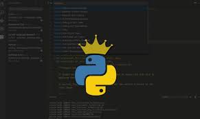
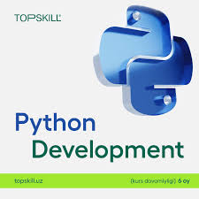
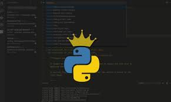
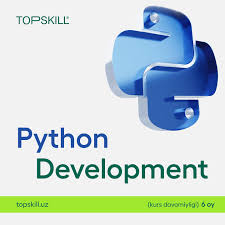

Dasturlash tillari haqida ma'lumot
Python ([ˈpʌɪθ (ə)n] — payton, piton) — turli sohalar uchun yuqori darajadagi umumiy maqsadli dasturlash tili. Uning dizayn falsafasi muhim chekinishdan foydalangan holda kodning oʻqilishiga urgʻu beradi. Uning til konstruksiyalari va obyektga yoʻnaltirilgan yondashuvi dasturchilarga kichik va yirik loyihalar uchun aniq, mantiqiy kod yozishda yordam berishga qaratilgan[4]. Shuningdek Python sunʼiy intellekt hamda maʼlumotlar muhandisiligi sohalarining tili hisoblanadi. Python deyarli barcha platformalarda ishlay oladi, xususan Windows, Linux, Mac OS X, Palm OS, Mac OS va boshqalar shular jumlasidandir. Python Microsoft.NET platformasi uchun yozilgan realizatsiyasi ham mavjud boʻlib, uning nomi — IronPython dasturlash muhitidir. Guido van Rossum 1980-yillarning oxirida ABC dasturlash tilining davomchisi sifatida Python ustida ishlay boshladi va birinchi marta 1991-yilda Python 0.9.0 versiyasini ommaga eʼlon qildi[5]. Python dasturlash tiliga boʻlgan talab yildan yilga oshib bormoqda. CodingDojo[6] portalining tadqiqotlariga koʻra, 2020—2021-yillarda aynan Python tilida dasturlovchi mutaxassislarga eng koʻp talab boʻlgan[7].
 



Python nima? Python - mashhur dasturlash tili. U Guido van Rossum tomonidan 1991 yilda ishlab chiqilgan. Bu dasturlash tili o'rganish uchun oson, foydalanish uchun qulay, ko'p qirrali dasturlash tili bo'lib, dasturlashga yangi kirganlar uchun ham, soha mutaxassislari uchun ham zo'r tanlov. Python quyidagilar uchun ishlatiladi: veb-ishlab chiqish (server tomonida), dasturiy ta'minotni ishlab chiqish, matematik amallar, tizim skriptlari. Bu dasturlash tilida nimalar qilishi mumkin? Python serverda veb-ilovalar ishlab chiqish uchun ishlatilinishi mumkin. Python ish oqimlarini yaratish uchun dasturiy ta'minot bilan bir qatorda ishlatilishi mumkin. Python ma'lumotlar bazasi tizimlariga ulanishi mumkin. Bundan tashqari, u fayllarni o'qishi va o'zgartirishi mumkin. Python katta ma'lumotlarga ishlov berish va murakkab matematikani bajarish uchun ishlatilishi mumkin. Pythonni tezkor prototiplash yoki ishlab chiqarishga tayyor dasturiy ta'minotni ishlab chiqish uchun ishlatish mumkin.